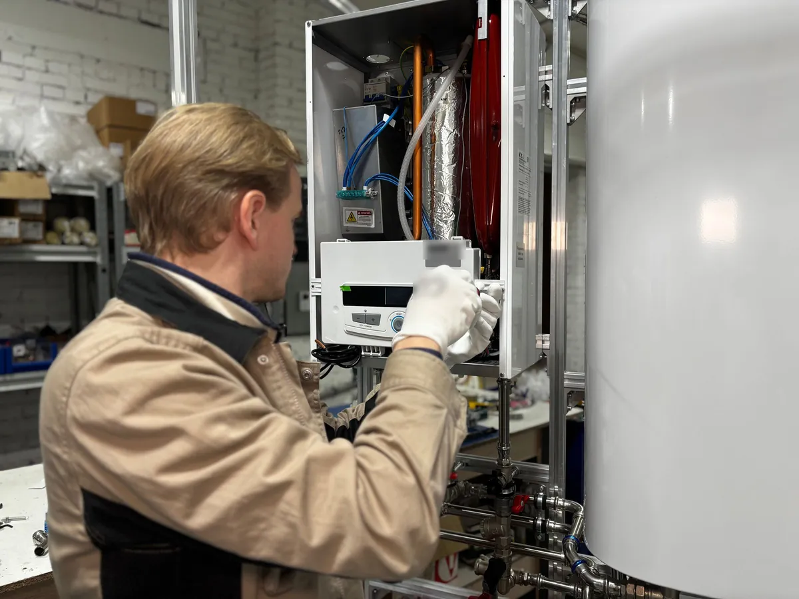
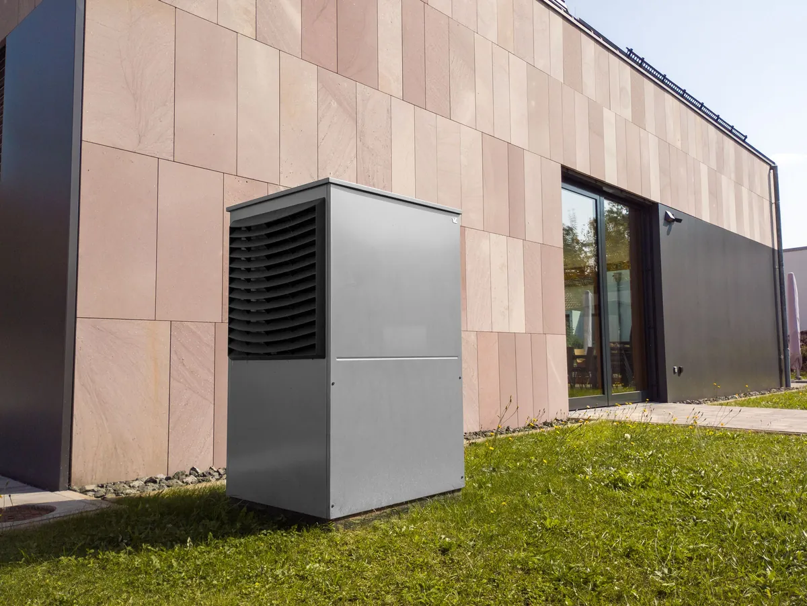
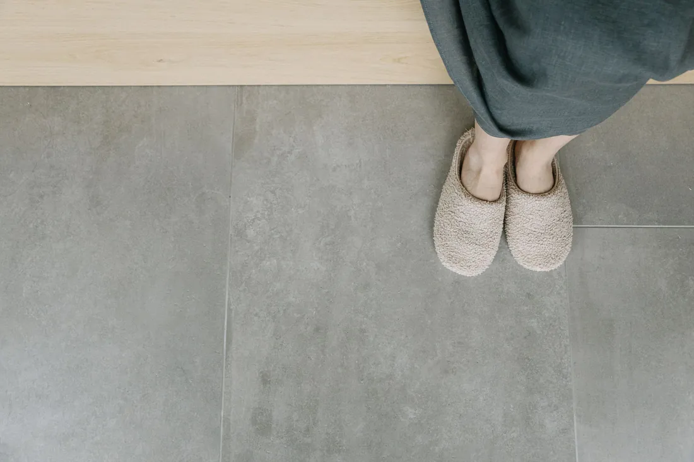
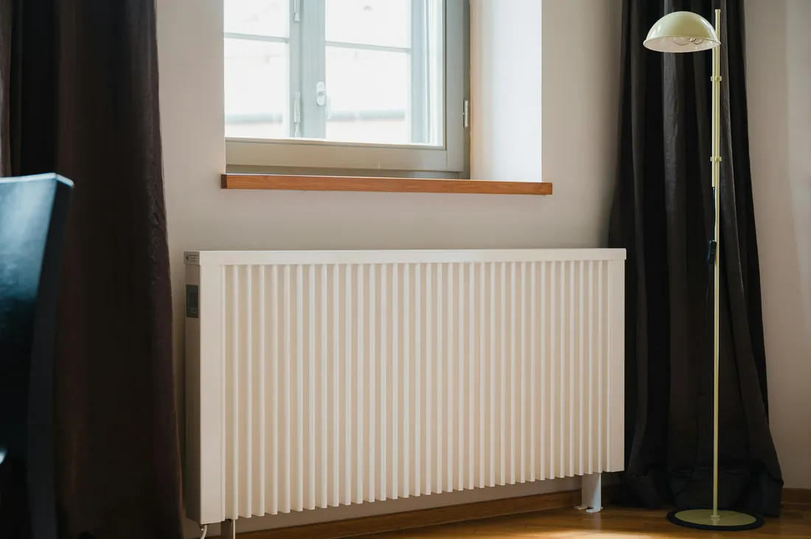
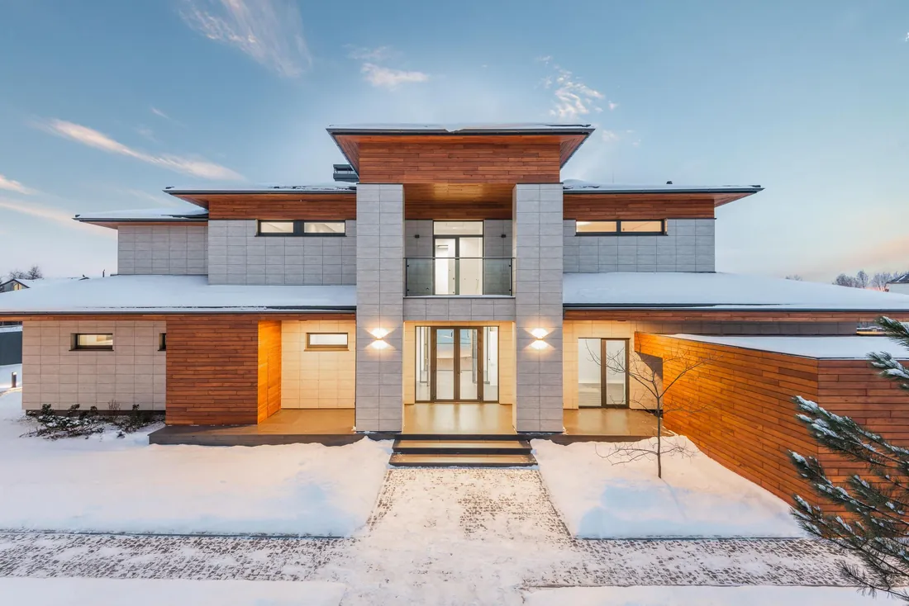
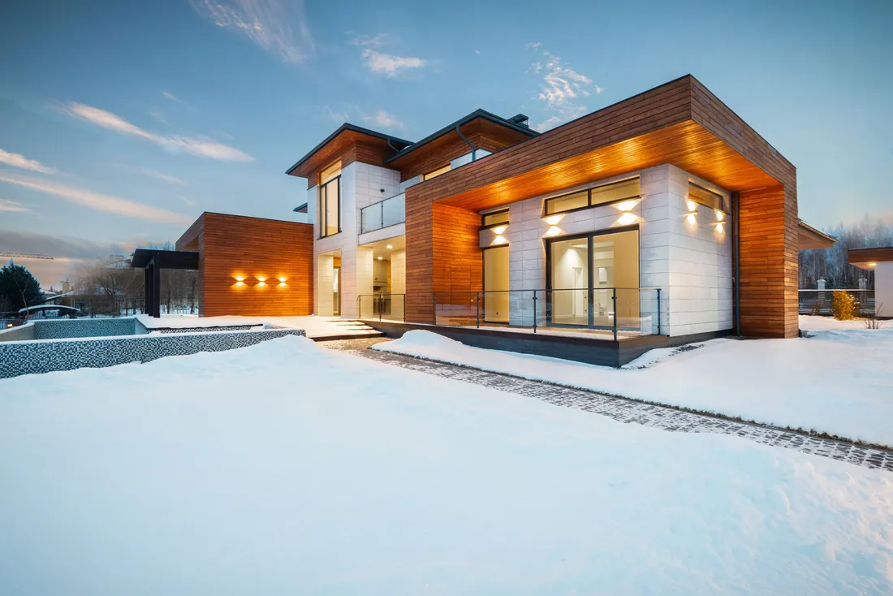
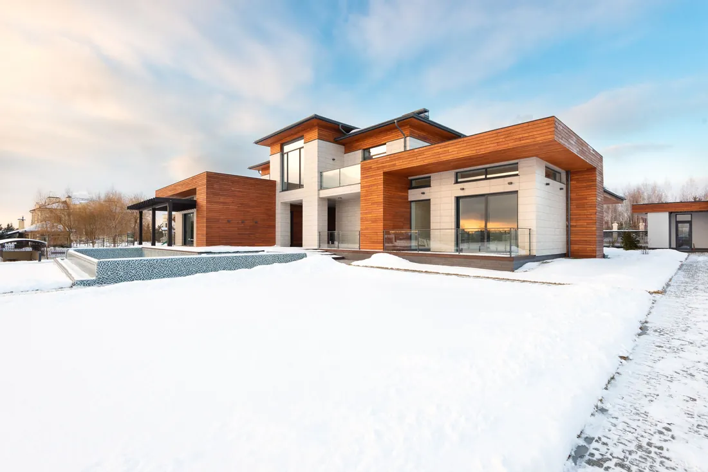

Centrală pe gaz
Pentru casă sau apartament cu gaz racordat.
- Ieftină la început, totul automat
- Încălzește și apa, și casa
- Necesită proiect și racordare la gaz
- Sistem pentru 120 m²
- —
- Încălzire pe lună
- —
Centrale pe gaz și cazane pe combustibil solid, pompe de căldură, calorifere și pardoseală caldă. Proiectăm, montăm, punem în funcțiune și facem service.
Aflați prețul orientativ în 30 de secundeCel mai des ne sunați într-una din aceste șase situații. Apăsați pe a dvs. — în calculator vor fi deja alese variantele potrivite, rămâne doar să indicați suprafața.
Prețul de mai jos — sistem la cheie pentru o casă de 120 m² cu calorifere: centrală, racordare, trasee, calorifere și punere în funcțiune. Consumul este orientativ, pentru o casă izolată, iarna.

Pentru casă sau apartament cu gaz racordat.

Pentru casă fără gaz sau ca sursă de rezervă.

Pentru o casă nouă izolată, ideal cu pardoseală caldă.

Pentru apartament, casă mică sau vilă.

Centrala doar încălzește apa. Confortul depinde de felul în care căldura ajunge în camere. Vă ajutăm să alegeți înainte de a turna șapa — refacerea costă scump.
Încălzesc repede camera, se montează ușor într-o casă gata. Fiecare cameră are termostatul ei.
Căldură de jos, uniformă în toată camera, fără calorifere sub ferestre. Cel mai bun partener pentru pompa de căldură.
Pardoseală la parter, în baie și bucătărie, calorifere în dormitoare. Două sisteme de la o singură centrală.
 1. CazangeriaCentrală sau pompă, boiler de apă caldă, pompe și automatizare
1. CazangeriaCentrală sau pompă, boiler de apă caldă, pompe și automatizare 2. DistribuitorulÎmparte apa pe circuite, grupul de amestec coboară temperatura pentru pardoseală
2. DistribuitorulÎmparte apa pe circuite, grupul de amestec coboară temperatura pentru pardoseală
3. CamereleCircuite sub șapă și calorifere cu capete termostaticeÎn ziua predării nu se văd — apar după un sezon, când șapa e turnată și gresia pusă. Vă spunem ce se întâmplă și cum le evităm.
Polipropilena se dilată mult la căldură și se îndoaie greu. În șapă se rupe la coturi și îmbinări — scurgerea se caută cu perforatorul.
Cum facem noiDoar țeavă PEX sau PE-RT cu barieră de oxigen — dintr-o bucată, fără îmbinări sub șapă.
Circuitul scurt ia aproape toată apa, celui lung îi rămâne puțin. Fără reglaj camerele se încălzesc inegal.
Cum facem noiMontăm distribuitor cu debitmetre și reglăm fiecare circuit la pornire. Setările le trecem în proces-verbal.
O țeavă îndoită sau un fiting prost se vede doar sub presiune. După turnare nu-l mai găsiți fără să spargeți pardoseala.
Cum facem noiȚinem sistemul la presiune de 1,5 ori peste cea de lucru minimum 24 de ore și turnăm șapa fără a scădea presiunea.
Izolația, țeava și șapa ocupă 10–12 cm. Dacă ușile și geamurile sunt deja montate — crește pragul sau renunțați la pardoseală.
Cum facem noiCalculăm straturile pardoselii înainte de șapa brută și dăm constructorilor cotele de nivel.

Folia subțire nu ține căldura — ea pleacă în placa de beton și în sol.
Cum facem noiSub țeavă — minimum 50 mm de polistiren în apartament și 100 mm în casă pe sol.
La pas de 30 cm între țevi rămân dungi reci — desculț se simte imediat.
Cum facem noiPas de 10–15 cm la geamuri și pereții exteriori, 15–20 cm în mijlocul camerei — după calculul pierderilor de căldură.
Circuitul lung are rezistență mare: pompa nu-l împinge, apa se răcește mult înainte de capăt.
Cum facem noiCircuit de maximum 80–90 m pentru țeava de 16 mm. Camera mare o împărțim în 2–3 circuite.

O centrală prea puternică pornește și se oprește mereu: randamentul scade, piesele se uzează, consumul de gaz crește.
Cum facem noiAlegem puterea după calculul pierderilor de căldură — ținând cont de pereți, geamuri și izolație, nu doar de suprafață.

Centrala dă 60–80 °C, iar pardoselii îi trebuie 35–45 °C. Fără amestec pardoseala frige, iar șapa crapă.
Cum facem noiMontăm pe distribuitorul pardoselii un grup de amestec cu ventil termostatic și pompă proprie.
Răspundeți la patru întrebări — intervalul de preț îl vedeți imediat. Nu trebuie să lăsați numărul.
CalculațiCalculăm după prețurile noastre la echipament și lucrări. Devizul exact îl face inginerul după deplasarea gratuită — și el intră în contract.
Centrala pe gaz cu calorifere este cea mai frecventă comandă. Prețul „de la” include cazangeria, traseele, caloriferele și pornirea.
—
Montaj 4–5 zile
Calculați mai exact—
Montaj 5–6 zile
Calculați mai exact—
Montaj 7–9 zile
Calculați mai exactDacă aveți nevoie nu de tot sistemul, ci de o singură lucrare — iată prețurile noastre. Pe fiecare rând scrie ce include, ca să nu fie surprize.
Prețuri în lei, fără costul echipamentului, dacă nu e indicat altfel. Deplasarea în Chișinău și suburbii — gratuit, în raioane — prin înțelegere.
Am comparat pe exemplul unei case izolate de 120 m² cu calorifere. Consumul este media unei luni de iarnă: gazul la 26 lei/m³, curentul circa 3,9 lei/kWh.
| Gaz | Lemne, peleți | Pompă de căldură | Centrală electrică | |
|---|---|---|---|---|
| Sistem la cheie | — | — | — | — |
| Încălzire pe lună | — | — | — | — |
| Necesită implicare | Nu, automat | Încărcare cu combustibil de 1–2 ori pe zi | Nu, automat | Nu, automat |
| Necesită gaz | Da | Nu | Nu | Nu |
| Coș de fum | Coaxial, prin perete | Complet | Nu e necesar | Nu e necesar |
| Durata de viață | 12–15 ani | 15–20 ani | 15–20 ani | 10–15 ani |
Aveți gaz la casă — centrală în condensare: cea mai ieftină la început și arde cu 20–30% mai puțin gaz decât una veche.
Casă nouă izolată — pompă de căldură cu pardoseală caldă: lunar de două ori mai ieftină decât gazul, diferența de preț se recuperează în 3–4 ierni.
Fără gaz, casă veche — cazan pe lemne sau peleți cu puffer.
Apartament sau vilă până la 60 m² — centrală electrică: montaj ieftin, facturi mici.
Plata pe etape — fără avans de 100%.
Suprafața, sistemul, termenul și prețul final — ca în contract. Apăsați pe obiect ca să vedeți devizul detaliat.



Toate condițiile sunt în contract. După montaj nu dispărem: o dată pe an venim la revizia centralei.
Au montat centrala și caloriferele cât am fost în Italia. În fiecare seară — poze pe Viber, nici un leu peste deviz.
Au făcut pardoseală caldă la parter și pompă de căldură. Prima iarnă — factura la curent mai mică decât era la gaz.
Centrala veche zumzăia și mânca gaz. Au schimbat-o într-o zi, au spălat caloriferele — în apartament constant +22.
Nu ați găsit întrebarea — scrieți pe Viber, vă răspunde inginerul.
Întrebați pe ViberCu gazul la 26 lei, pompa de căldură într-o casă izolată costă lunar cam de două ori mai puțin decât centrala pe gaz. La început e de 2–2,5 ori mai scumpă, dar diferența se recuperează în 3–4 ierni. Centrala pe gaz e avantajoasă dacă gazul e deja racordat și bugetul inițial e limitat sau dacă casa e veche și slab izolată.
Da. E nevoie de proiect și autorizația serviciului de gaze — pregătim actele și montăm centrală murală cu coș coaxial. De obicei lucrările durează 2–3 zile.
Apartament — 2–3 zile, casă de 100–150 m² — 4–6 zile, casă mare cu pardoseală caldă — 1–2 săptămâni. Pardoseala o turnăm cu șapă care se usucă încă o lună, dar cazangeria funcționează imediat.
Da, fără proiect gazul nu se racordează. Facem proiectul de încălzire, iar partea de gaz o coordonăm cu o organizație licențiată.
Se poate, dacă laminatul e compatibil cu pardoseala caldă — pe ambalaj este simbolul. Cel mai bine trece căldura prin gresie și porțelanat.
Într-o casă izolată — da. Într-o casă veche cu geamuri mari pardoseala se completează des cu calorifere. Se vede din calculul pierderilor de căldură pe care îl facem la deplasare.
Da, tot anul. Dacă centrala se strică pe ger, o reparăm sau montăm una nouă în ziua solicitării, când echipamentul e în stoc.
Pe etape: avans pentru echipament, apoi montajul după lucrările efectuate. Numerar sau transfer, pentru firme — cu factură.
Da, lucrăm în toată Moldova. În Chișinău și suburbii deplasarea e gratuită, în raioane — ne înțelegem, adesea gratuit la comanda sistemului.
Poza planului, suprafața și ce este acum în casă. Inginerul răspunde pe Viber sau vă sună.